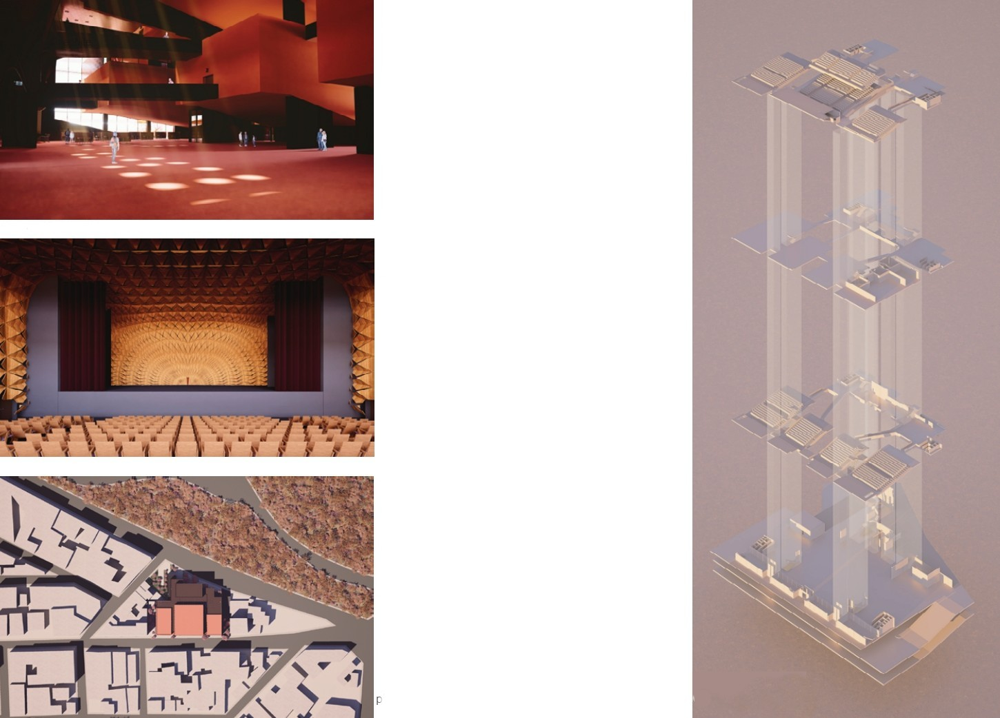
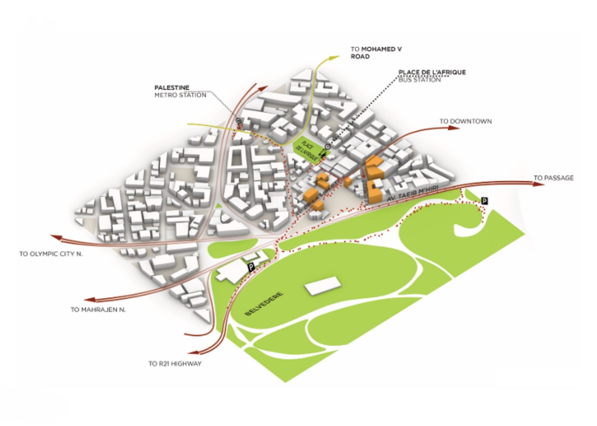
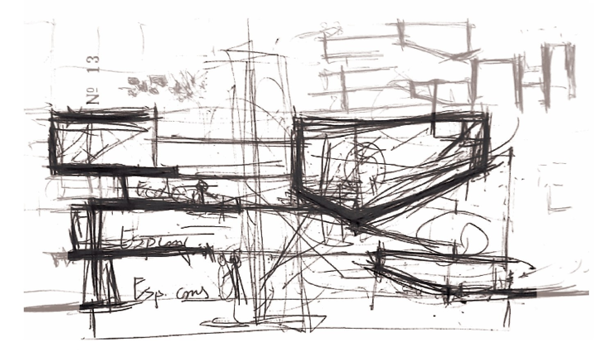
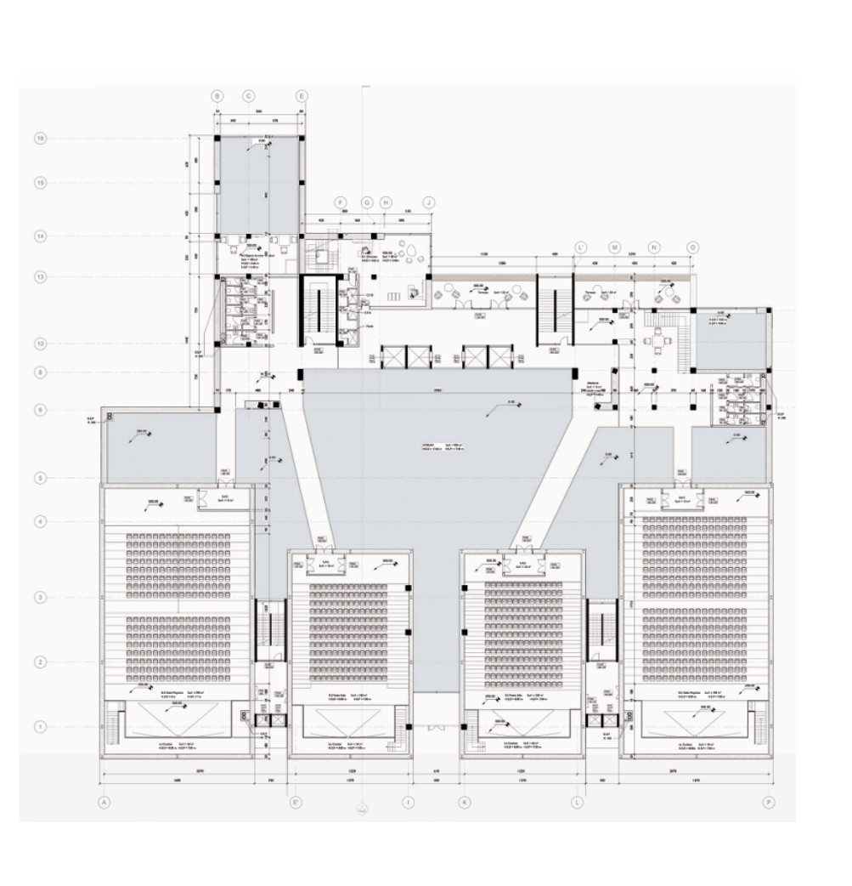
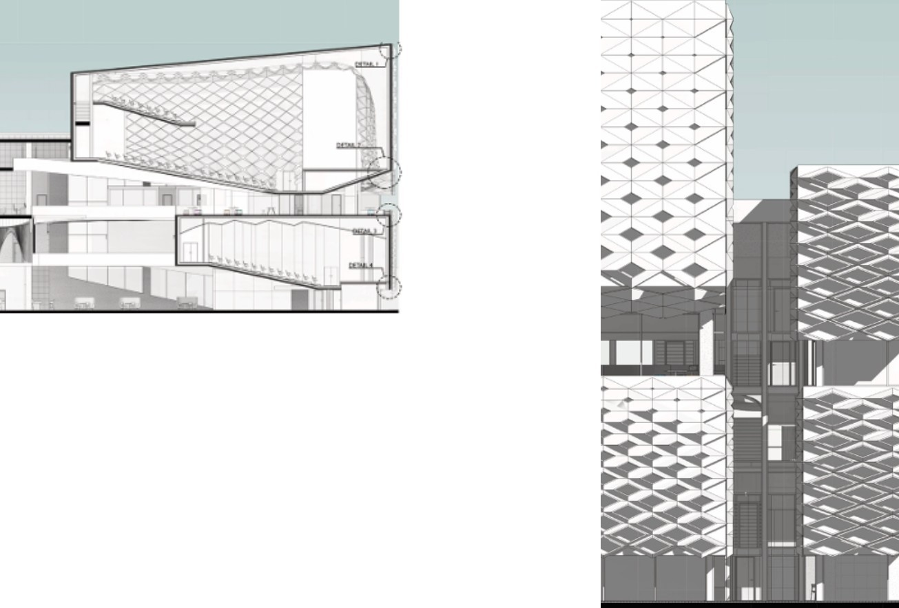

Academic · Cultural
Cinephile
A cinema complex in central Tunis, designed as an academic project at ENAU exploring the typology of the cultural institution as a piece of urban fabric. The project responds to a site at the intersection of the medina and the colonial city, a condition that demands a building capable of speaking to two distinct urban grammars without resolving them into a false synthesis.
The programme distributes four cinema screens, a film library and archive, a cafe, and public circulation spaces across a building that is simultaneously urban and introverted. The primary public space is a covered interior street that runs through the building from one facade to the other, accessible outside of cinema hours and acting as a shortcut through the block. This device allows the building to contribute to the pedestrian life of the neighbourhood rather than withdrawing from it.
The project was produced at the end of the first architectural cycle at ENAU and represents the first design work at urban scale, engaging seriously with questions of site, programme, and the relationship between architecture and the city.
Renders, Interior Spaces

Site Study

Design Sketches

Ground Floor Plan, N01

Section and Facade
